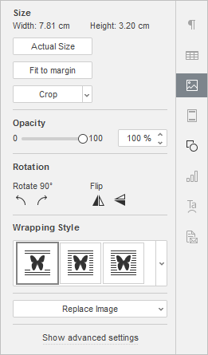
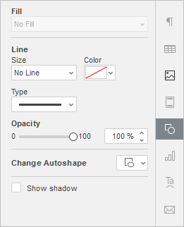
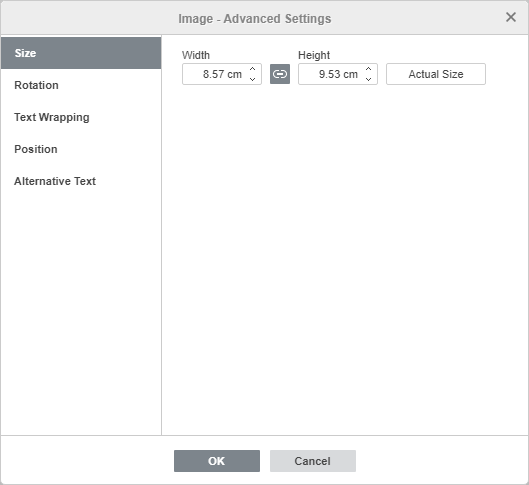
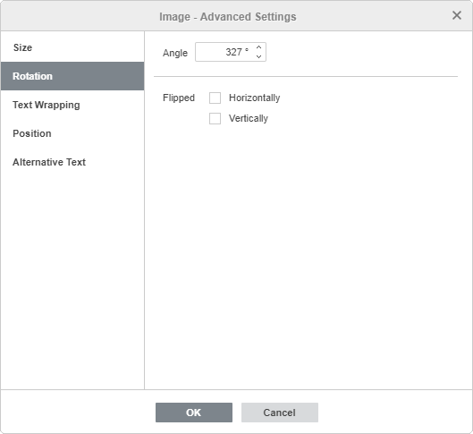
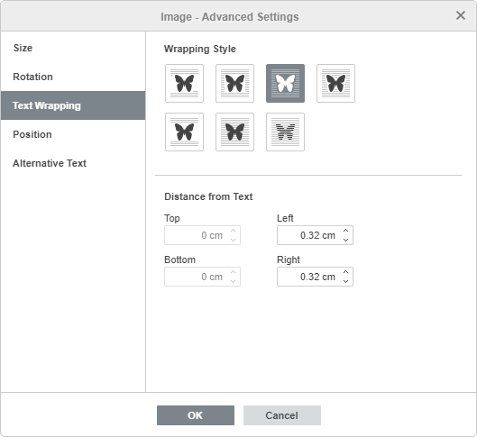
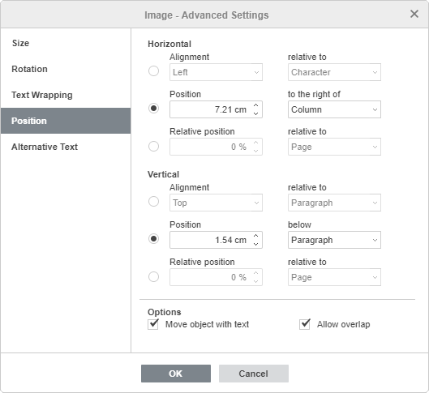
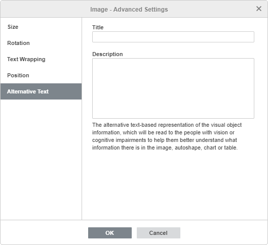

Umetanje slika
U Document Editor-u možete umetati slike u najpopularnijim formatima u dokument. Podržani su sledeći formati slika: BMP, GIF, JPEG, JPG, PNG.
Umetanje slike
Da biste umetnuli sliku u tekst dokumenta,
- postavite kursor na mesto gde želite da se slika umetne,
- pređite na karticu Insert na gornjoj traci sa alatkama,
- kliknite na ikonu Image na gornjoj traci sa alatkama,
- izaberite jednu od sledećih opcija za učitavanje slike:
- opcija Image from File otvoriće standardni dijalog za izbor fajla. Pronađite odgovarajući fajl na hard disku računara i kliknite na dugme Open
U onlajn editoru možete izabrati više slika odjednom.
- opcija Image from URL otvoriće prozor u koji možete uneti veb adresu željene slike i kliknuti na dugme OK
- opcija Image from Storage otvoriće prozor Select data source. Izaberite sliku sačuvanu na vašem portalu i kliknite na dugme OK
- opcija Image from File otvoriće standardni dijalog za izbor fajla. Pronađite odgovarajući fajl na hard disku računara i kliknite na dugme Open
- kada se slika doda, možete promeniti njenu veličinu, svojstva i položaj.
Takođe je moguće dodati natpis slici. Više informacija o radu sa natpisima za slike možete pronaći u ovom članku.
Pomeranje i promena veličine slika
Da biste promenili veličinu slike, prevucite male kvadrate koji se nalaze na njenim ivicama. Da biste zadržali originalne proporcije izabrane slike prilikom promene veličine, držite pritisnut taster Shift i prevucite jednu od ugaonih ikona.
Da biste promenili položaj slike, koristite ikonu koja se pojavljuje kada pređete kursorom miša preko slike. Prevucite sliku na željenu poziciju bez puštanja tastera miša.
Prilikom pomeranja slike, prikazuju se pomoćne linije koje vam pomažu da precizno pozicionirate objekat na stranici (ukoliko izabrani stil prelamanja nije „inline“).
Da biste rotirali sliku, postavite kursor miša iznad ručice za rotaciju i prevucite je u smeru ili suprotno od smera kazaljke na satu. Da biste ograničili ugao rotacije na korake od 15 stepeni, držite pritisnut taster Shift tokom rotacije.
Napomena: lista prečica sa tastature koje se mogu koristiti prilikom rada sa objektima dostupna je ovde.
Podešavanje svojstava slike

Neka svojstva slike mogu se promeniti pomoću kartice Image settings na desnoj bočnoj traci. Da biste je aktivirali, kliknite na sliku i izaberite ikonu Image settings sa desne strane. Ovde možete promeniti sledeća svojstva:
-
Size se koristi za prikaz Width i Height trenutne slike. Ako je potrebno, možete vratiti stvarnu veličinu slike klikom na dugme Actual Size. Dugme Fit to Margin omogućava promenu veličine slike tako da zauzme sav prostor između leve i desne margine stranice.
Dugme Crop koristi se za isecanje slike. Kliknite na dugme Crop da biste aktivirali ručice za isecanje koje se pojavljuju na uglovima slike i u centru svake njene ivice. Ručno prevucite ručice da biste definisali oblast isecanja. Možete pomeriti kursor miša preko ivice oblasti isecanja dok se ne pretvori u ikonu i prevući oblast.
- Da biste isekli jednu stranu, prevucite ručicu koja se nalazi u centru te strane.
- Da biste istovremeno isekli dve susedne strane, prevucite jednu od ugaonih ručica.
- Da biste jednako isekli dve suprotne strane slike, držite pritisnut taster Ctrl dok prevlačite ručicu u centru jedne od tih strana.
- Da biste jednako isekli sve strane slike, držite pritisnut taster Ctrl dok prevlačite bilo koju od ugaonih ručica.
Kada je oblast isecanja definisana, kliknite ponovo na dugme Crop, ili pritisnite taster Esc, ili kliknite bilo gde van oblasti isecanja da biste primenili izmene.
Nakon izbora oblasti isecanja, moguće je koristiti i opcije Crop to shape, Fill i Fit koje su dostupne u padajućem meniju Crop. Kliknite ponovo na dugme Crop i izaberite željenu opciju:
- Ako izaberete opciju Crop to shape, slika će popuniti određeni oblik. Možete izabrati oblik iz galerije koja se otvara kada zadržite pokazivač miša iznad opcije Crop to Shape. I dalje možete koristiti opcije Fill i Fit da biste izabrali način na koji se slika uklapa u oblik.
- Ako izaberete opciju Fill, centralni deo originalne slike biće sačuvan i korišćen za popunjavanje izabrane oblasti isecanja, dok će ostali delovi slike biti uklonjeni.
- Ako izaberete opciju Fit, slika će biti prilagođena tako da odgovara visini i širini oblasti isecanja. Nijedan deo originalne slike neće biti uklonjen, ali se mogu pojaviti prazni prostori unutar izabrane oblasti isecanja.
Da biste vratili sliku na podrazumevane dimenzije u pikselima, kliknite na dugme Reset crop.
- Opacity – koristi se za podešavanje nivoa neprovidnosti pomeranjem klizača ili ručnim unosom procentualne vrednosti. Podrazumevana vrednost je 100% i odgovara punoj neprovidnosti. Vrednost 0% odgovara potpunoj providnosti.
-
Rotation se koristi za rotaciju slike za 90 stepeni u smeru ili suprotno od smera kazaljke na satu, kao i za horizontalno ili vertikalno okretanje slike. Kliknite na jedno od sledećih dugmadi:
- za rotaciju slike za 90 stepeni suprotno od smera kazaljke na satu
- za rotaciju slike za 90 stepeni u smeru kazaljke na satu
- za horizontalno okretanje slike (sleva nadesno)
- za vertikalno okretanje slike (odozgo nadole)
- Stil prelamanja se koristi za izbor stila prelamanja teksta iz dostupnih opcija - u redu (inline), kvadratno (square), tesno (tight), kroz (through), gore i dole (top and bottom), ispred (in front), iza (behind) (za više informacija pogledajte opis naprednih podešavanja ispod).
- Zameni sliku se koristi za zamenu trenutne slike učitavanjem druge Iz fajla, Iz skladišta ili Sa URL-a.
Neke od ovih opcija možete pronaći i u meniju desnog klika. Opcije menija su:
- Iseci, Kopiraj, Nalepi - standardne opcije koje se koriste za isecanje ili kopiranje izabranog teksta/objekta i lepljenje prethodno isečenog/kopiranog teksta ili objekta na trenutnu poziciju kursora.
- Rasporedi se koristi za dovođenje izabrane slike u prvi plan, slanje u pozadinu, pomeranje napred ili nazad, kao i grupisanje ili razgrupisavanje slika radi rada sa više njih odjednom. Da biste saznali više o raspoređivanju objekata, pogledajte ovu stranicu.
- Poravnaj se koristi za poravnanje slike levo, na sredinu, desno, gore, po sredini ili dole. Da biste saznali više o poravnanju objekata, pogledajte ovu stranicu.
- Stil prelamanja se koristi za izbor stila prelamanja teksta iz dostupnih opcija - u redu (inline), kvadratno (square), tesno (tight), kroz (through), gore i dole (top and bottom), ispred (in front), iza (behind) - ili za uređivanje granice prelamanja. Opcija Uredi granicu prelamanja dostupna je samo ako izabrani stil prelamanja nije u redu (inline). Prevucite tačke prelamanja da biste prilagodili granicu. Da biste napravili novu tačku prelamanja, kliknite bilo gde na crvenu liniju i prevucite je na željenu poziciju.
- Rotiraj se koristi za rotaciju slike za 90 stepeni u smeru ili suprotno od smera kazaljke na satu, kao i za horizontalno ili vertikalno okretanje slike.
- Sačuvaj kao sliku se koristi za čuvanje slike kao slike na vaš hard disk.
- Iseci se koristi za primenu jedne od opcija isecanja: Iseci, Popuni ili Uklopi. Izaberite opciju Iseci iz podmenija, zatim prevucite ručice za isecanje da biste definisali oblast isecanja i ponovo izaberite jednu od ove tri opcije iz podmenija da biste primenili izmene.
- Stvarna veličina se koristi za promenu trenutne veličine slike na stvarnu.
- Zameni sliku se koristi za zamenu trenutne slike učitavanjem druge Iz fajla ili Sa URL-a.
- Napredna podešavanja slike se koristi za otvaranje prozora „Image - Advanced Settings“.

Kada je slika izabrana, ikona Podešavanja oblika je takođe dostupna sa desne strane. Možete kliknuti na ovu ikonu da biste otvorili karticu Podešavanja oblika na desnoj bočnoj traci i podesili tip, veličinu, boju i neprovidnost Linije, kao i promenili tip oblika izborom drugog oblika iz menija Promeni automatski oblik. Oblik slike će se odgovarajuće promeniti.
Na kartici Podešavanja oblika možete koristiti i opciju Prikaži senku da biste dodali senku slici.
Podešavanje naprednih podešavanja slike
Da biste promenili napredna podešavanja slike, kliknite desnim tasterom miša na sliku i izaberite opciju Napredna podešavanja slike iz menija desnog klika ili samo kliknite na link Prikaži napredna podešavanja na desnoj bočnoj traci. Otvoriće se prozor sa svojstvima slike:

Kartica Veličina sadrži sledeće parametre:
- Širina i Visina - koristite ove opcije da promenite širinu i/ili visinu. Ako je kliknuto dugme Stalne proporcije (u tom slučaju izgleda ovako ), širina i visina će se menjati zajedno uz očuvanje originalnog odnosa stranica slike. Da biste vratili stvarnu veličinu dodate slike, kliknite na dugme Stvarna veličina.

Kartica Rotacija sadrži sledeće parametre:
- Ugao - koristite ovu opciju da rotirate sliku za tačno određeni ugao. Unesite potrebnu vrednost u stepenima u polje ili je prilagodite koristeći strelice sa desne strane.
- Okrenuto - označite polje Horizontalno da biste okrenuli sliku horizontalno (sleva nadesno) ili označite polje Vertikalno da biste okrenuli sliku vertikalno (naopako).

Kartica Prelamanje teksta sadrži sledeće parametre:
- Stil prelamanja - koristite ovu opciju da promenite način na koji je slika pozicionirana u odnosu na tekst: ili će biti deo teksta (ako izaberete stil u redu/inline) ili će je tekst obilaziti sa svih strana (ako izaberete jedan od ostalih stilova).
- U redu - slika se smatra delom teksta, kao znak, pa kada se tekst pomera, slika se pomera zajedno sa njim. U tom slučaju opcije pozicioniranja nisu dostupne.
Ako je izabran jedan od sledećih stilova, sliku možete pomerati nezavisno od teksta i precizno je pozicionirati na stranici:
- Kvadratno - tekst se prelama oko pravougaonog okvira koji ograničava sliku.
- Tesno - tekst se prelama oko stvarnih ivica slike.
- Kroz - tekst se prelama oko ivica slike i popunjava otvoreni beli prostor unutar slike. Da bi se efekat pojavio, koristite opciju Uredi granicu prelamanja iz menija desnog klika.
- Gore i dole - tekst je samo iznad i ispod slike.
- Ispred - slika prekriva tekst.
- Iza - tekst prekriva sliku.
- U redu - slika se smatra delom teksta, kao znak, pa kada se tekst pomera, slika se pomera zajedno sa njim. U tom slučaju opcije pozicioniranja nisu dostupne.
Ako izaberete stil kvadratno, tesno, kroz ili gore i dole, moći ćete da podesite dodatne parametre - udaljenost od teksta sa svih strana (gore, dole, levo, desno).

Kartica Pozicija je dostupna samo ako izaberete stil prelamanja različit od u redu (inline). Ova kartica sadrži sledeće parametre koji se razlikuju u zavisnosti od izabranog stila prelamanja:
-
Odeljak Horizontalno omogućava izbor jednog od sledeća tri tipa pozicioniranja slike:
- Poravnanje (levo, centar, desno) u odnosu na znak, kolonu, levu marginu, marginu, stranicu ili desnu marginu,
- Apsolutna Pozicija merena u apsolutnim jedinicama tj. centimetrima/tačkama/inčima (u zavisnosti od opcije podešene na kartici File -> Advanced Settings...) udesno od znaka, kolone, leve margine, margine, stranice ili desne margine,
- Relativna pozicija merena u procentima u odnosu na levu marginu, marginu, stranicu ili desnu marginu.
-
Odeljak Vertikalno omogućava izbor jednog od sledeća tri tipa pozicioniranja slike:
- Poravnanje (gore, centar, dole) u odnosu na liniju, marginu, donju marginu, pasus, stranicu ili gornju marginu,
- Apsolutna Pozicija merena u apsolutnim jedinicama tj. centimetrima/tačkama/inčima (u zavisnosti od opcije podešene na kartici File -> Advanced Settings...) ispod linije, margine, donje margine, pasusa, stranice ili gornje margine,
- Relativna pozicija merena u procentima u odnosu na marginu, donju marginu, stranicu ili gornju marginu.
- Pomeri objekat sa tekstom obezbeđuje da se slika pomera zajedno sa tekstom za koji je usidrena.
- Dozvoli preklapanje omogućava da se dve slike preklapaju ako ih prevučete blizu jedna drugoj na stranici.

Kartica Alternativni tekst omogućava da se unesu Naslov i Opis koji će biti pročitani osobama sa oštećenjem vida ili kognitivnim poteškoćama kako bi bolje razumele koje informacije slika sadrži.